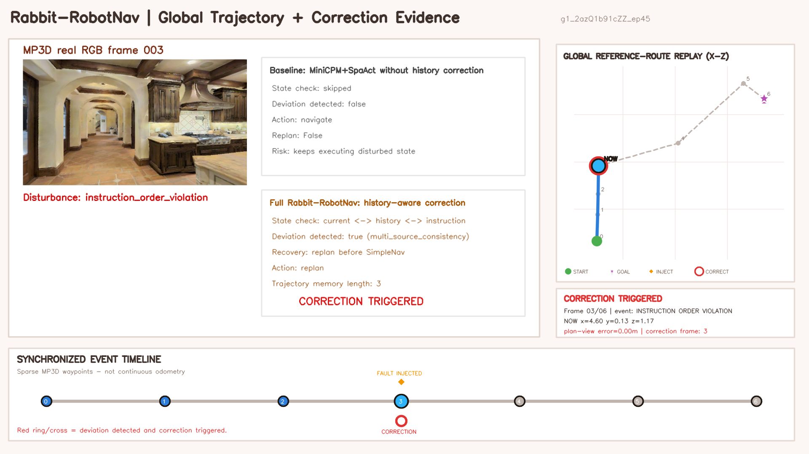

Abstract
Errors in long-horizon vision-language navigation can accumulate beyond a single observation. Rabbit-RobotNav studies whether trusted semantic-spatial history can support label-free deviation diagnosis and selection of a reliable recovery anchor. It compares the current observation and post-action state with instruction progress, historical states, and spatial transitions. The present evidence supports controlled-case diagnosis and static RGB-D projection checks; it does not establish improved navigation success or autonomous closed-loop recovery.
Contributions
- Trusted historical memory. Keep raw observations separate from reliability-gated semantic-spatial states.
- Multi-source consistency diagnosis. Check instruction progress, historical evidence, and state transitions without reading evaluation labels.
- Recovery-anchor selection. Locate the error boundary and retrieve the last reliable state with supporting evidence; execution remains future work.
Method Overview
The central question is not only where the robot is now, but whether its current state agrees with where the instruction and trusted history say it should be.
The proposed stack draws on MiniCPM-RobotTrack for vision-language grounding and SpaAct for dynamic spatial relations. Trusted history and consistency checks support deviation diagnosis and anchor selection; SimpleNav/ROS 2 recovery execution is not yet validated.

Controlled Deviation Replay
A frame-synchronized replay of the instruction-order case. The plotted X–Z points are sparse reference waypoints, not continuous robot odometry.
Video 1. G1 global-trajectory replay from the experimental ledger, encoded as H.264 for browser playback.
Qualitative Analysis
The failure case matters: a 2.44 m pose jump was not detected in the five-scene controlled replay, despite detection of three other injected deviation types.
Video 2. G2 pose-jump miss. The redrawn route is a sparse reference replay, not evidence of autonomous recovery.
Quantitative Evidence
These preliminary checks have different scopes; they cannot be combined into a claimed benchmark improvement.
| Evaluation | Observed result | Interpretation |
|---|---|---|
| Controlled MP3D replay · 5 scenes / 5 episodes | 3 of 4 injected deviation types detected | Mechanism-level case study; pose jump missed |
| Normal sparse reference points | 0 alerts at 34 points | No observed false alarm in this small replay |
| Paired CMA navigation A/B · 110 episodes | SR tied; SPL and nDTW did not improve | No demonstrated navigation gain |
| WheelTec Astra · static Trial 0 | 413 frames received / 388 processed | Static perception check only; no mobile mapping result |
Results are traceable in the experimental ledger and research repository. Formal multi-episode ablation remains pending.
Real-Robot Setup
On the WheelTec mecanum base, the current mapper passed its Color CameraInfo plus registered-depth projection contract and a motionless Trial 0. Depth CameraInfo still contains non-finite intrinsic values; moving trials and navigation are not admitted by this result.


Demo Video
Spatial-relation conflict in a controlled MP3D sparse-waypoint replay. This is an evidence video, not an end-to-end ground-robot navigation demo.
Video 3. G5 spatial-relation conflict, with RGB evidence, reference route, and diagnostic timeline.
Resources & Status
This page is a research preview, not a published paper. The thesis title is 《基于历史感知语义地图与动态空间推理的长程视觉语言导航纠错框架研究》. Controlled diagnosis, a missed pose jump, and static camera projection are documented; autonomous recovery execution, mobile semantic mapping, and a positive SR/SPL/nDTW result remain unverified.
Thesis framework · Experimental ledger · Research code · Research mind map